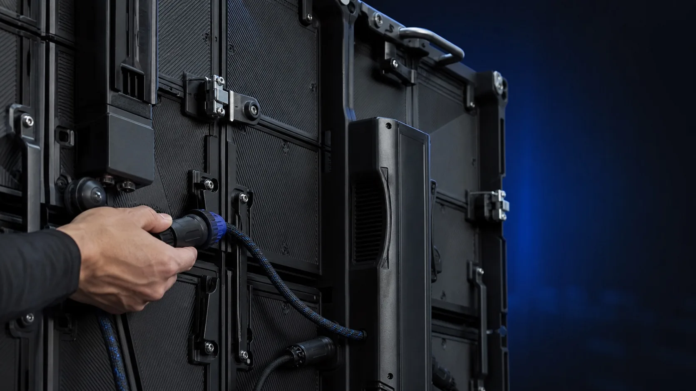
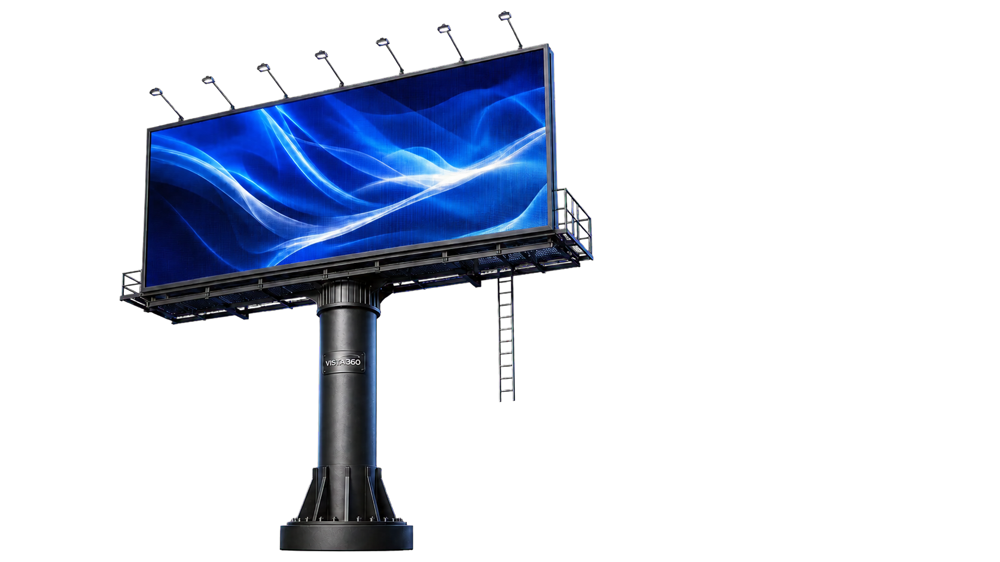
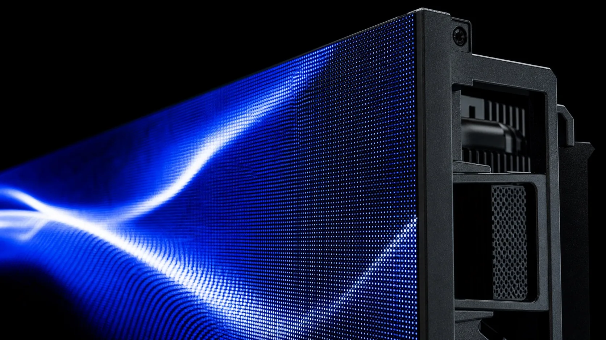
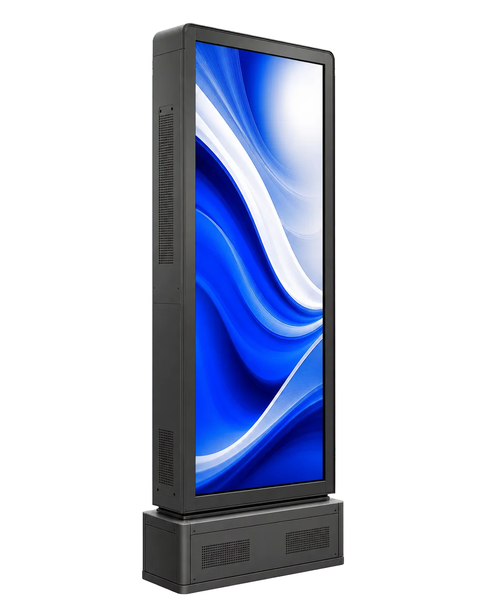
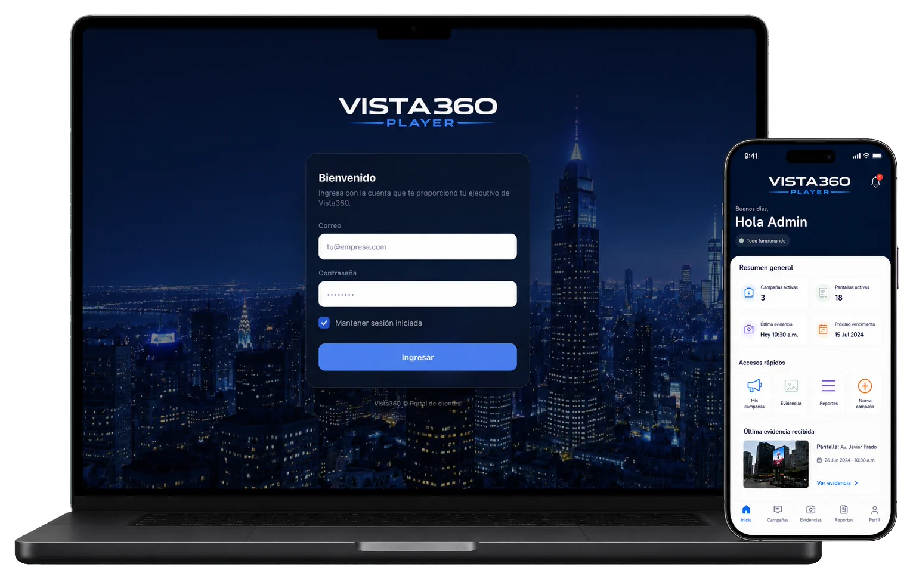

Movimiento
Contenido animado para captar atención en el recorrido.

Pantallas LED y tótems digitales preparados para campañas dinámicas, programación y comunicación actualizable.
Registrar mi interés →La tecnología amplía las posibilidades de la publicidad exterior: una misma superficie puede mostrar distintas piezas y adaptarse a la programación de la campaña.
Digital conserva la escala y ubicación de un soporte exterior, pero añade movimiento, actualización de piezas y una experiencia de seguimiento más ordenada.
Contenido animado para captar atención en el recorrido.
Diferentes piezas pueden organizarse durante la campaña.
La información permanece disponible mediante Player.

Un panel exterior de gran escala preparado para mostrar contenido dinámico y diferentes piezas durante el día.

El contenido se adapta a una superficie luminosa. Contraste, escala, ritmo y duración trabajan juntos para mantener claridad en movimiento.

Una pantalla vertical para accesos, plazas y zonas de espera donde la comunicación puede actualizarse sin reemplazar una pieza impresa.
Digital añade flexibilidad creativa y programación sin perder la presencia física de la publicidad exterior.
Movimiento y transiciones pensados para el recorrido.
Una campaña puede organizar distintos mensajes.
La información se centraliza para una revisión más clara.
Player reúne campañas, pantallas, evidencias y reportes para que el seguimiento se mantenga disponible desde cualquier dispositivo.

Relacionamos distancia, entorno y tipo de contenido.
Preparamos la pieza para su superficie y duración.
Organizamos la publicación y la información de campaña.